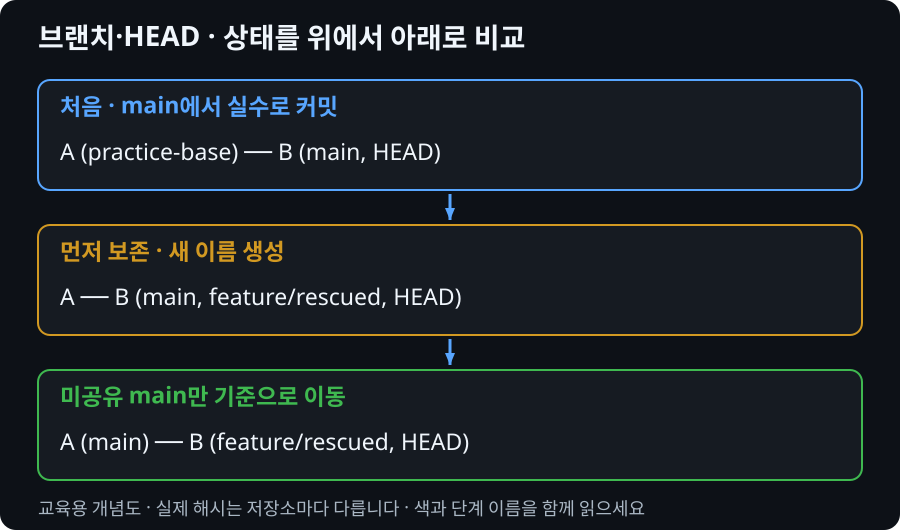

잘못된 브랜치의 작업을 잃지 않고 옮기기
main에서 기능을 완성해 커밋했지만 아직 누구에게도 공유하지 않았습니다. 작업을 살리면서 main을 원래 기준으로 돌려야 합니다. 먼저 commit을 보존할 이름부터 만듭니다.
내부에서는 어떤 일이 일어날까?
브랜치는 폴더가 아니라 커밋을 가리키는 참조입니다. 일반적인 HEAD는 현재 브랜치를 가리키고, commit하면 그 브랜치가 새 커밋으로 이동합니다. 다른 브랜치는 자동으로 이동하지 않습니다.
새 브랜치를 현재 커밋에 만들면 두 이름이 같은 커밋을 가리킵니다. 파일을 복사하지 않고도 커밋을 잃지 않을 안전한 기준점을 확보할 수 있습니다.
미커밋 파일은 아직 특정 커밋에 속하지 않습니다. 전환 후 덮어쓸 위험이 없으면 유지될 수 있지만, 충돌하는 변경이면 switch가 거절합니다. 거절은 변경을 보호하는 동작이지 Git 고장이 아닙니다.

1. 시작 상태 만들기
수업자료 저장소 루트에서 아래 명령을 실행합니다. 출력된 Set-Location 명령으로 새 연습 폴더에 들어갑니다. 기존 프로젝트에서는 복구 명령을 연습하지 않습니다. 재시작할 때는 새 폴더를 생성하고 이전 폴더를 남겨 비교합니다.
python scripts/recovery_lab.py committed
main에 base 다음 accidental-main 커밋이 있습니다. practice-base 태그는 실습에서 생성한 정확한 시작 커밋입니다. 원격은 없으므로 이 실습 커밋은 공유되지 않았습니다.
2. 진단하고 예상하기
git status git branch --show-current git log --oneline --decorate --all git remote -v
명령 실행 전 어떤 파일·참조가 달라질지 말하고, 실행 후 출력과 비교합니다.
3. 복구 방법 선택
미커밋 상태면 새 feature 브랜치를 만들고 작업을 계속하면 됩니다. 이미 로컬 커밋했다면 커밋을 가리키는 feature를 먼저 만듭니다. 공유한 main이라면 이력 이동을 하지 말고 팀과 revert 또는 수정 PR을 결정합니다.
판단 후 복구 절차 펼치기
git switch -c feature/rescued git log --oneline -2 # 이 실습에서만: main은 미공유이고 feature에서 작업 중임을 확인 git branch -f main practice-base
4. 복구 성공을 검증하기
git log --oneline --graph --decorate --all git show main:README.md git show feature/rescued:README.md git status
main은 base, feature/rescued는 accidental-main 내용을 가리킵니다. 현재 브랜치는 feature/rescued이고 clean이어야 합니다. branch -f는 파일이 아니라 지정한 브랜치 참조를 이동했습니다.
branch -f도 이력을 가리키는 이름을 바꿉니다. 다른 작업자가 사용하는 main에 그대로 적용하지 않습니다. practice-base가 없는 실제 프로젝트에서 태그 이름이나 기준 해시를 임의로 추측하지 않습니다.
5. 조건을 바꿔 설명하기
미커밋 변경이 있는 상태와 원격 push까지 한 상태에서는 왜 같은 복구를 할 수 없을까요? 전환 거절 재현은 branch 모드에서 수행하고, 다음 임시 보관 실습으로 이어집니다.
제출할 문서는 없습니다. 화면에서 근거를 가리키며 “현재 상태 → 선택 이유 → 남은 작업”을 설명합니다.
공식 문서와 연결
Git switch 공식 문서에서 명령의 입력·출력 범위를 확인합니다. 예제는 PowerShell 기준입니다. 실제 해시·브랜치명은 출력에서 확인하며 그대로 추측해서 입력하지 않습니다.